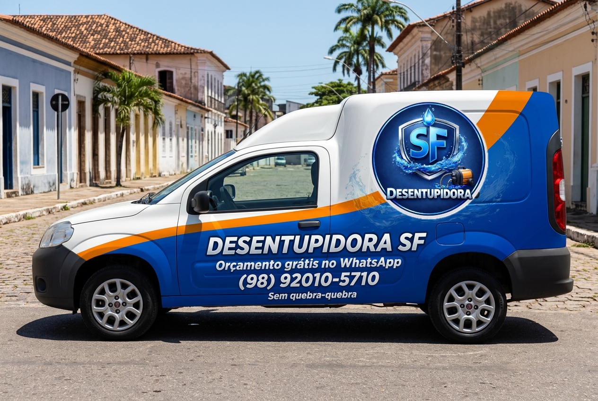
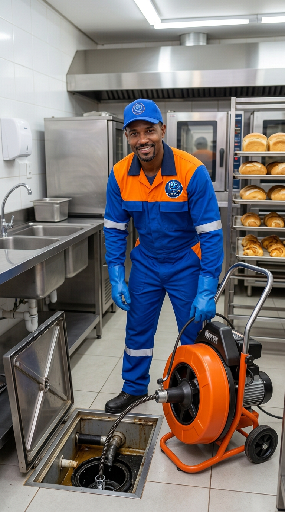
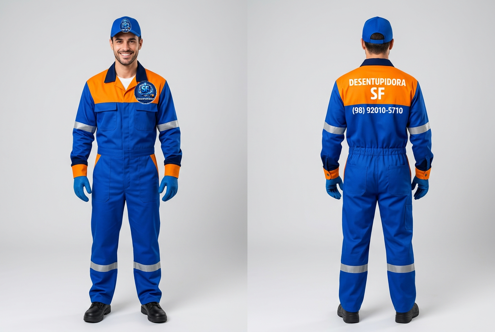
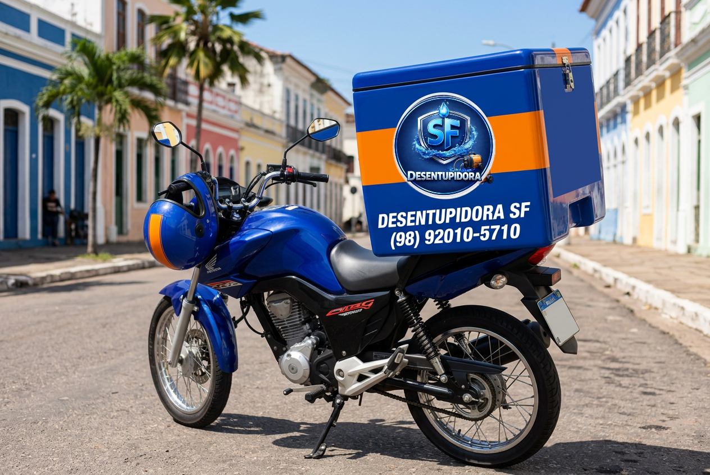
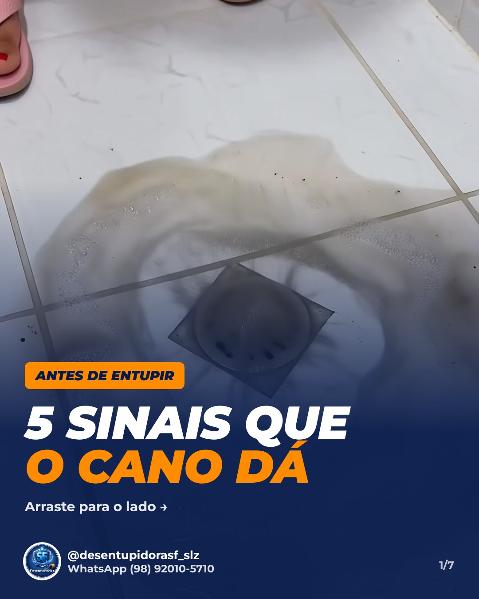
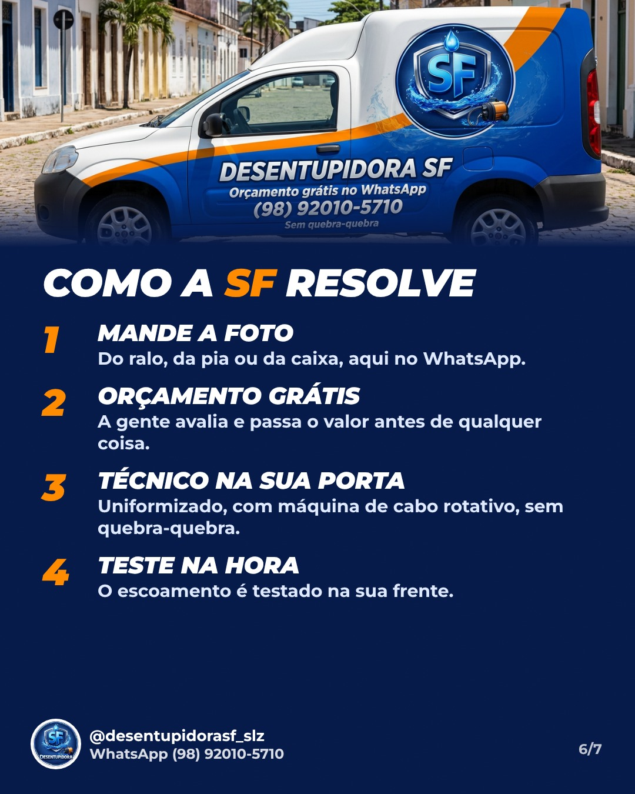

Branding book · 2026
Desentupidora
SF
Quem somos, como falamos, como aparecemos. O guia para toda peça, todo atendimento e todo técnico da SF.

Quem somos, como falamos, como aparecemos. O guia para toda peça, todo atendimento e todo técnico da SF.
1 · Essência
2 · Verbal
3 · Visual
Propósito
Devolver a tranquilidade da casa e do negócio quando o cano para, sem bagunça e sem surpresa.
Missão
Desentupir com técnica, limpeza e transparência em São Luís, São José de Ribamar, Paço do Lumiar e Raposa.
Visão
Ser a primeira desentupidora em que São Luís pensa quando entope.
01
Respeito pela casa
Sem quebra-quebra na maioria dos casos. Entrar, resolver e deixar o lugar limpo.
02
Transparência
Orçamento antes do serviço e teste do escoamento na frente do cliente.
03
Técnica
Máquina de cabo rotativo e método, em vez de produto agressivo e improviso.
04
Presença
Técnico uniformizado, identificado e educado. A farda é a nossa palavra.
05
Agilidade responsável
Responder rápido e agendar no mesmo dia quando a agenda permite, sem prometer o que não depende de nós.
Para quem tem um entupimento em São Luís e não quer quebra-quebra nem surpresa, a SF é a desentupidora que resolve com máquina, mostra o orçamento antes e testa na sua frente.
Arquétipo: o Cuidador que resolve. Acolhe quem está aflito e chega com a solução na mão.
A SF é
A SF não é
Como alguém de confiança falando no WhatsApp: frase curta, palavra simples, entendida numa leitura só.
Evite
"Realizamos serviços de desobstrução de tubulações com excelência e qualidade garantida."
Prefira
"Entupiu? Manda uma foto aqui que a gente vê e passa o orçamento sem custo."
Evite
"Atendimento 24h, chegamos em 30 minutos, o menor preço!"
Prefira
"Se a agenda permitir, a gente vai hoje mesmo. Antes, você já sabe o valor."
Ninguém escolhe a hora de entupir. Acontece no almoço, na visita, na chuva, com a cozinha cheia. Nessa hora você não precisa de susto, de piso quebrado nem de preço surpresa. Precisa de alguém que chegue de farda, explique o que vai fazer, use a máquina certa e teste na sua frente. Isso é a SF.
Entupiu? A SF resolve.
ASSINATURA
Entupiu? A SF resolve.
Casa
"Água voltando pelo ralo? Manda a foto que a gente resolve sem quebrar o seu piso."
Condomínio
"Garagem alagada ou coluna entupida: a gente atende condomínio e testa na frente dos moradores."
Restaurante
"Caixa de gordura em dia é cozinha funcionando no almoço."
Empresa
"Banheiro e copa parados atrapalham o dia. A SF vai, resolve e mostra funcionando."
Pode dizer
Nunca dizer
1
Acolher
"Oi! Aqui é da Desentupidora SF. Me conta o que aconteceu?"
2
Pedir a foto
"Consegue mandar uma foto ou um vídeo do ralo, pia ou caixa? Assim já te passo o orçamento."
3
Orçar
Valor claro, o que está incluso e como o técnico vai fazer.
4
Agendar
Confirmar endereço, horário e o nome do técnico que vai.
5
Depois
"Ficou tudo certo? Se puder, deixa sua avaliação no Google. Ajuda muito a gente."
Responder rápido, chamar pelo nome e mandar foto do antes e do depois quando o cliente autorizar.
Logo original do cliente, mantido como está: escudo, água e a máquina de cabo rotativo contam o serviço num selo só.
Área de proteção: 1/4 do diâmetro
Sobre fundo escuro: borda branca
Tamanho mínimo
Impresso 2,5 cm · Tela 120 px
Não distorcer, não recolorir, não redesenhar com IA, não tirar o círculo.
Marinho
#061A4A
Azul royal
#1D5FD0 · farda e frota
Laranja
#FF8A00 · destaque
Céu
#3FA9FF
Branco azulado
#F4F8FF
Títulos · Montserrat Black Italic · caixa alta
Entupiu?
Textos · Montserrat Bold
Mande uma foto no WhatsApp. O técnico chega uniformizado e testa na hora.
A faixa diagonal laranja (o "fluxo") vem do flyer do cliente e aparece na farda, na frota e nas artes. Os selos repetem só as promessas reais. Sem emojis, adesivos ou ícones 3D.





Nas peças produzidas, bordar sempre o arquivo original da logo.

Base azul royal, faixa laranja diagonal, logo grande na porta, nome e WhatsApp legíveis a 20 metros.


Socorro rápido
O problema aconteceu agora: a saída é chamar no WhatsApp.
Evite o prejuízo
Dicas de prevenção: o que não jogar no ralo, caixa de gordura em dia.
Educativo
Sinais de entupimento, mitos, como funciona o cabo rotativo.
Bastidores
Fotos e vídeos reais de serviço, equipe e equipamento.
Fala com a gente
Enquetes e perguntas que puxam conversa no direct.
Legendas no estilo blog SEO: título com palavra-chave, subtítulos, exemplo, chamada e 3 a 5 hashtags variadas (tema + nicho + São Luís).
Entupiu? A SF resolve.
WhatsApp (98) 92010-5710 · @desentupidorasf_slz · desentupidorasf.pages.dev